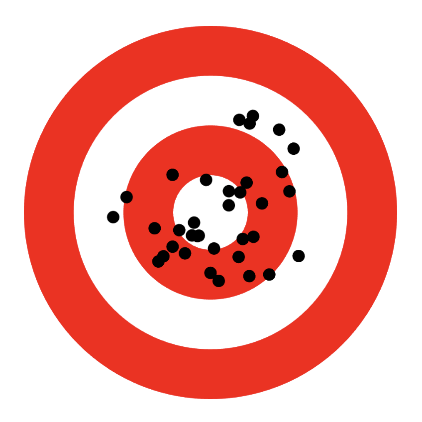
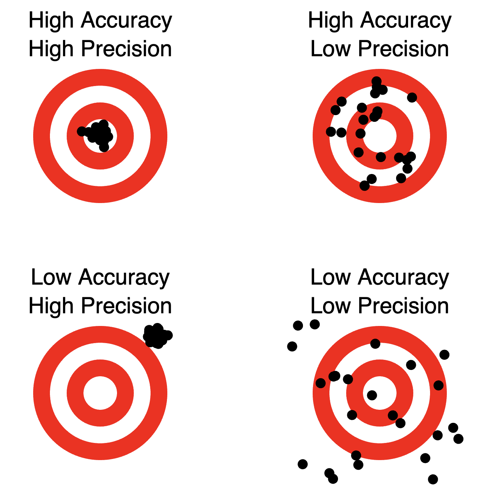
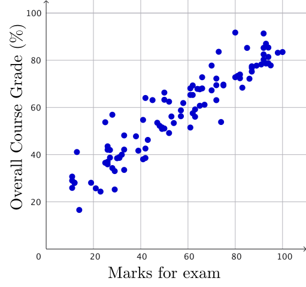
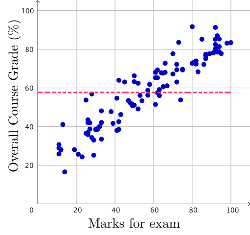
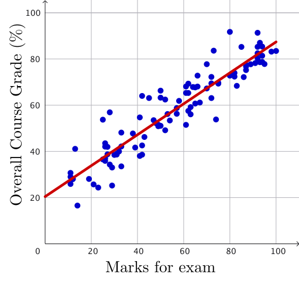
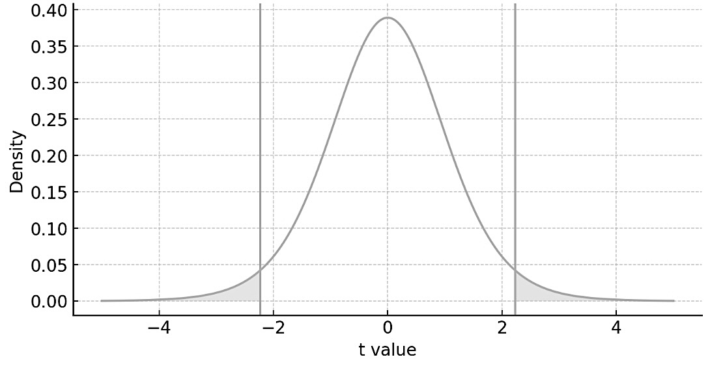
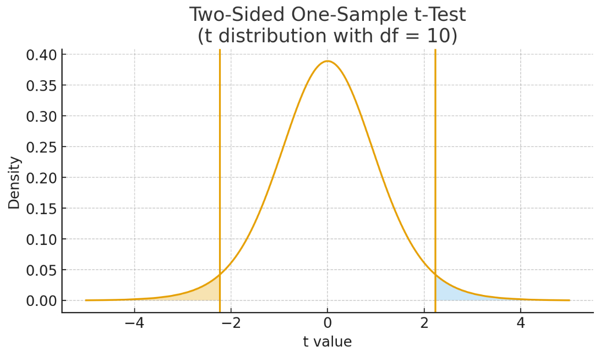

Quantitative Reasoning
1015SCG
Lecture 4
Example Best estimate and standard error (precision)
|
For Group 1, we have \( x = 1.643 \pm 0.015 \, \text{s}\) For Group 2, we have \( x = 1.64882 \pm 0.00040 \, \text{s}\) |
Precision - Accuracy
Accuracy: Are we close to the true value?
Precision: Are our measurements consistent with each other?
👉 Accuracy is about correctness.
👉 Precision is about consistency.

High Accuracy, High Precision
We are both correct and consistent! |
High Accuracy, Low Precision
We are correct on average, but not consistent. |
 |
Low Accuracy, High Precision
We are consistent, but consistently wrong. |
Low Accuracy, Low Precision
We are neither correct nor consistent. |
Precision - Accuracy: Incline plane experiment
But we don't know accuracy unless
|
 |
How can we obtain the true value?


Is it possible to obtain the true value?
Linear Regression

Linear Regression
|
 |
 |
Linear Regression
|
Slope and intercept form: \(y = mx + b\) Simple linear regression: \(\hat{y} = \beta_1 x + \beta_0\) If \(\hat{y_i} = \beta_1 x_i + \beta_0,\) we define the residuals as \(e_i= y_i - \hat{y_i}\) Then the residual sum of squares (RSS) is \( \ds \sum_{i} e_i^2\) The least squares approach chooses $\beta_1\,$ and $\,\beta_0$ to minimize the RSS. |
|
Exploration
The Linear Regression Model
For a dataset of pairs \( (x_1, y_1), (x_2, y_2), \ldots, (x_n, y_n), \) we assume that the relationship between \(x\) and \(y\) can be described by a straight line plus a random "error":
\( y_i = \beta_1 x_i + \beta_0 + \varepsilon_i \)
- \(\beta_0\) (intercept): the predicted value of \(y\) when \(x=0\).
- \(\beta_1\) (slope): how much the predicted value of \(y\) changes for each 1-unit increase in \(x\).
- \(\varepsilon_i\) (deviation): The "error" term does not imply a mistake, but a deviation from the underlying straight line model. It captures anything that may affect \(y_i\) other than \(x_i.\)
The Linear Regression Model
For a dataset of pairs \( (x_1, y_1), (x_2, y_2), \ldots, (x_n, y_n), \) we assume that the relationship between \(x\) and \(y\) can be described by a straight line plus a random "error":
\( y_i = \beta_1 x_i + \beta_0 + \varepsilon_i \)
Least-squares coefficient estimates
\(\ds \beta_1 = \frac{\ds\sum_{i=1}^{n} (x_i-\bar{x})(y_i-\bar{y})}{\ds\sum_{i=1}^{n} (x_i-\bar{x})^2},\) \(\;\; \beta_0 = \bar{y} - \beta_1 \,\bar{x}, \) \(\;\; s_e = \sqrt{\dfrac{\ds\sum_{i=1}^{n}(y_i - \hat{y}_i )^2}{n-2}}, \)
where \(\bar{x} = \frac{1}{n}\sum_{i=1}^{n} x_i,\;\)\(\;\bar{y} = \frac{1}{n}\sum_{i=1}^{n}y_i\;\) and $\;s_e=$ Residual Standard Error
📝 Example 💻 📈
The data in the Lecture sheets → workshop tab gives the workshop attendance, workshop mark, Inference/Maths Task mark, Scientific Critique Task mark and overall course mark (total marks).
- ✅Pearson/Correlation coefficient: students' attendance vs overall course mark.
- Using regression, establish a linear relation between attendance ($x$-axis) and the total marks ($y$-axis). Find the plot with a fit, the gradient and intercept with errors, $r^2$ and standard error.
- Using the regression model, on average, what is the change in overall course mark for each additional workshop a student attended, with an error range?
- How many workshops with an error does a student has to attend to pass the course?
Excel Instructions:
📝 Example 💻 📈 - Solutions
-
✅Pearson/Correlation coefficient: students' attendance vs overall course
mark.
Ans. 0.79 -
Using regression, establish a linear relation between attendance ($x$-axis) and the
total marks ($y$-axis). Find the plot with a fit, the gradient and intercept with
errors, $r^2$ and standard error.
Ans. $y$-intercept 14.1 with Standard Error 2.3
Gradient 12.20 with Standard Error 0.47 | $\;\;r^2:$ 0.63 | SE: 16.25 -
Using the regression model, on average, what is the change in overall course
mark for each additional workshop a student attended, with an error range?
Ans. 12.20 $\pm$ 0.47
Linear Model \(\,\hat{y}=mx+b\,\): Workshop attendance vs overall mark
Raw data
| Term | Value | Error |
| Intercept | 14.1102117 | 2.318984079 |
| X Variable 1 (Slope) | 12.20017398 | 0.470818213 |
Data considering 2 s.f.
| Term | Value | Error |
| $b$ | 14.1 | 2.3 |
| $m$ (Slope) | 12.20 | 0.47 |
📝 Example 💻 📈 - Solutions - Error Propagation Setup
4. How many workshops with an error does a student has to attend to pass the course?
Our equation here is \(\,\hat{y}=mx+b\) \(=50.\) We need to solve for $x$, that is:
\( \ds x = \frac{50 - b}{m} \)
Both \( m \) and \( b \) have uncertainty. We treat \( x \) as a function:
\( x = f(m,b) \)
📝 Example 💻 📈 - Solutions - Error Propagation Formula
\( \ds\Delta x^2 = \left(\frac{\partial x}{\partial m}\right)^2 \Delta m^2 + \left(\frac{\partial x}{\partial b}\right)^2 \Delta b^2 \)
Compute the partial derivatives of \( \ds x = \frac{50 - b}{m} \) \( \ds = \frac{50 - 14.1}{12.20} \) \( \ds = 2.94\)
Derivative with respect to \( m \): \( \ds \frac{\partial x}{\partial m} \) \(\ds = -\frac{50 - b}{m^2} \) \(\ds = -\frac{x}{m} \)
Derivative with respect to \( b \): \( \ds\frac{\partial x}{\partial b} = -\frac{1}{m} \)
👉 $\;\;m= 12.20,$ $\;\;b=14.1$
📝 Example 💻 📈 - Solutions - Substituting Values
\( \ds\Delta x^2 = \left(\frac{\partial x}{\partial m}\right)^2 \Delta m^2 + \left(\frac{\partial x}{\partial b}\right)^2 \Delta b^2 \)
Using: \( \,x = 2.94, \;\) \( m = 12.20 \)
\( \ds \frac{\partial x}{\partial m} = -\frac{x}{m} \) \( = \ds -\frac{2.94}{12.20} \) \( \approx -0.241 \)
\( \ds \frac{\partial x}{\partial b} =-\frac{1}{m} \) \( = \ds -\frac{1}{12.20} \) \( \approx -0.082 \)
📝 Example 💻 📈 - Solutions - Final Uncertainty in \( x \)
\( \ds\Delta x^2 = \left(\frac{\partial x}{\partial m}\right)^2 \Delta m^2 + \left(\frac{\partial x}{\partial b}\right)^2 \Delta b^2 \)
Then \( \Delta m = 0.47, \,\) \( \Delta b = 2.3,\, \) \( \dfrac{\partial x}{\partial m} = -0.241, \,\) \( \dfrac{\partial x}{\partial b}= -0.082. \)
\(\qquad \Ra \;\Delta x^2 = (0.241)^2 (0.47)^2 + (0.082)^2 (2.3)^2 \) \(=0.0484\)
\(\Ra \;\Delta x =\sqrt{0.0484}\) \( \approx 0.22 \)
\(\Ra\;\) \( x = 2.94 \pm 0.22 \)
\(\Ra\;\) No. of workshops to pass \( \,= 3 \)
What do we learn from the Data analysis tool? 🤔
The line of best fit to our data is \[ \hat{y} = \beta_1 x + \beta_0 \]
- Plot of data with the line of best fit. ✅
- Gradient and its error: $\beta_1 + \Delta \beta_1$ ✅
- $y$-intercept and its error: $\beta_0 + \Delta \beta_0$ ✅
- $r^2$ - Square of the Pearson coefficient, how well the fit matches the data. ✅
- Standard residual error - what is an error in $y$ when we predict the $y$ value from our model for some specific value of $x.$ ✅
Remember
- Do not fit line to the data that is not linear!
- Regression only works for the range of data we have - we can interpolate but extrapolation might not work.

Source: Randal Munroe xkcd.com/1725
Remark
Linear regression is used in AI 🤖

AI relies on Calculus, Probability, Statistics and Linear Algebra.
📝 Practice 💻 📈
Look at the Lecture sheets Excel file, tab fatalities.
- Plot the data.
- What two trends you can see in the data?
- Find the regression for the full data set, does it make sense?
- Find the regression for the decreasing data, does this fit make sense?
- Find the predicted fatalities in year 2010 with an error. Is the value similar to the recorded value?
- Find the predicted fatalities in year 2040 with an error. Does this value make sense? Why not?
Linear Model: Fatalities by Cars (1975-2019)
Raw data
| Term | Value | Error |
| Intercept | 122,480.0276 | 5367.287736 |
| X Variable 1 (Slope) | -60.26482213 | 2.687618547 |
Data considering 2 s.f.
| Term | Value | Error |
| Intercept | 120,000 | 5,400 |
| X Variable 1 (Slope) | -60 | 2.7 |
Linear Model: Fatalities by Cars (1975-2019)
We model fatalities using a linear function:
\( \hat{y} = mx + b \)
Gradient: \( m = -60 \pm 2.7 \)
Intercept: \( b = 122,000 \pm 5,400 \)
\( \hat{y} = -60x + 122,000 \)
Prediction for 2010
\( \hat{y} = -60x + 122,000 \)
\( \hat{y}(2010) = -60(2010) + 122,000 \;\;\)
\(\quad \;\; = -120,600 + 122,000 \)
\( = 1400 \qquad \qquad \;\,\)
Predicted fatalities in 2010: \( \;\hat{y} = 1,400 .\)
From data source: \(\;2010 \rightarrow 1,353.\)
Error Propagation for 2010
We know that the Standard Error = $234.14.$
Using 2 s.f. then Standard Error = $230.$
Predicted fatalities in 2010: \( \;\hat{y} = 1,400 .\)
So the uncertainty in the prediction for 2010 is:
\( 1,400 \pm 230 \)
Prediction for 2040
\( \hat{y} = -60x + 122,000 \)
\( \hat{y}(2040) = -60(2040) + 122,000 \)
\(\qquad = -122,400 + 122,00 \)
\( = -400 \qquad \quad \;\;\)
The model predicts a negative value, which is not realistic.
This shows the danger of extrapolation. 😬
Recall: The incline problem from week 3
|
Group 1 results: \( x = 1.643 \pm 0.015 \, \text{s}\;\) 👈 Group 2 results: \( x = 1.64882 \pm 0.00040 \, \text{s}\;\) 👈 The theory says that \(t = \ds \sqrt{\dfrac{2L^2}{h \times g}}\) \(= 1.648731\, \text{s}\) where $g = 9.81\, \text{m}/\text{s}^2,$ $h= 0.3\, \text{m}$ and $L = 2\,\text{m}.$ |
Hypothesis testing
| Result (seconds) | |
| Group 1 | \( 1.643 \pm 0.015\) |
| Group 2 | \( 1.64882 \pm 0.00040 \) |
| Theory | \(\ds 1.648731\) |
Claim: Experimental results agree with the theory.
🤔 Is this claim true? False?
Hypothesis testing

We will use theoretical probability distributions to test our hypothesis.
Statistical Hypothesis
Hypothesis testing - part of the scientific method.

Statistical Hypothesis
Hypothesis testing - part of the scientific method.
In statistics, we frame the questions as a hypothesis:
- Do the experimental results agree with the expected value?
- Do the experimental results agree with each other?
We start with Null hypothesis $\text{H}_0$ - hypothesis that matches our predictions.
Then we use statistical methods to accept or reject the hypothesis.
What does it mean?
Do the experimental results agree with the expected value?
There is true/expected value for our experimental result $\mu_T.$
Repeat measurement $n$ times.
It is more likely than the measurements are scattered about the true value than biased.
I can estimate how likely it is that the true value matches our experiment with given $\mu_T$ and $\text{SE}.$
Confidence Level, Confidence Interval, and Significance
How likely is it that the true value \( \mu_T \) matches our experiment?
Example: The true value lies in the range \[ 1.1 \pm 0.4 \,\text{m},\] with 95% confidence level ($\text{CL}$).
- I performed the experiment.
- I obtained the best estimate and its error from the experimental data.
- The confidence level is 95%.
- From this information, we can determine a confidence interval $\text{CI}$ —a range of values derived from our measurements (we will show how to calculate it soon).
Confidence Level, Confidence Interval, and Significance
How likely is it that the true value \( \mu_T \) matches our experiment?
Example: The true value lies in the range \( 1.1 \pm 0.4 \,\text{m} \), 95% $\text{CL}$
- I performed the experiment$.$
- I obtained the best estimate and its error from the experimental data$.$
- The confidence level is 95%$.$
- From this information, we can determine a confidence interval $\text{CI}$ —a range of values derived from our measurements (we will show how to calculate it soon)$.$
What it means:
- If we were to repeat the experiment many times...
- ...and calculate the confidence interval in the same way each time...
- ...the true value would lie within this interval 95% of the time (the confidence level)
- Therefore, it would lie outside this interval only 5% (0.05) of the time - the statistical significance
Confidence Level, Confidence Interval, and Significance
There are two ways to approach confidence levels and confidence intervals:
- Choose a confidence interval and determine the corresponding confidence level.
- Choose a confidence level and determine the corresponding confidence interval.
Hypothesis Testing
-
Two-sided Student $t$-test
“Do the experimental results agree with the expected value?” -
Welch $t$-test
“Do the two experimental results agree with each other?”

Two-sided Student $t$-test

Goal: To determine and compare two values
1. $t$-critical value and 2.
$t$-statistic value.
Two-sided Student $t$-test
Does the estimate \( \mu \) match the expected or theoretical value \( \mu_0 \)?
- Calculate the average \( \mu \) and the standard error \( \text{SE} .\)
- Choose a confidence level \( \text{CL} .\)
- Find the number of degrees of freedom: \( \text{df} = n - 1 .\)
- Find the $t$-critical value (\( t_{\textbf{critical}} \)) for the given \( \text{CL} \) and \( \text{df} \) (from a table or Excel). This is the theoretical value based on a probability distribution.
-
Then there are two mathematically equivalent options:
- Check if \(\mu- t_c \times \text{SE} \leq \mu_0 \leq \mu+ t_c \times\text{SE}\), confidence interval \(\text{CI}.\)
- Check if $t$-statistic \(=\ds t_{\textbf{stat}} = \frac{|\mu - \mu_0|}{\text{SE}}\) is smaller than $t_{\textbf{critical}}$: \(\ds t_{\textbf{stat}} \leq t_{\textbf{critical}} .\)
✅ If $t_{\textbf{stat}} \leq t_{\textbf{critical}} ,$ the estimate \( \mu \)
agrees
with the
expected/theoretical value \( \mu_0 .\)
❌ If not, the estimate \( \mu \) does not agree with
the expected/theoretical value \( \mu_0.\)
Table of $t$-criticals based on confidence and $n$: levels of confidence 50%-99.9%
| $\text{df}$ | 50% | 60% | 70% | 80% | 90% | 95% | 98% | 99% | 99.5% | 99.8% | 99.9% |
|---|---|---|---|---|---|---|---|---|---|---|---|
| 1 | 1.000 | 1.376 | 1.963 | 3.078 | 6.314 | 12.706 | 31.821 | 63.657 | 127.321 | 318.309 | 636.619 |
| 2 | 0.816 | 1.061 | 1.386 | 1.886 | 2.920 | 4.303 | 6.965 | 9.925 | 14.089 | 22.327 | 31.599 |
| 3 | 0.765 | 0.978 | 1.250 | 1.638 | 2.353 | 3.182 | 4.541 | 5.841 | 7.453 | 10.215 | 12.924 |
| 4 | 0.741 | 0.941 | 1.190 | 1.533 | 2.132 | 2.776 | 3.747 | 4.604 | 5.598 | 7.173 | 8.610 |
| 5 | 0.727 | 0.920 | 1.156 | 1.476 | 2.015 | 2.571 | 3.365 | 4.032 | 4.773 | 5.893 | 6.869 |
| 20 | 0.687 | 0.860 | 1.064 | 1.325 | 1.725 | 2.086 | 2.528 | 2.845 | 3.153 | 3.552 | 3.850 |
| 100 | 0.677 | 0.845 | 1.042 | 1.290 | 1.660 | 1.984 | 2.364 | 2.626 | 2.871 | 3.174 | 3.390 |
| ∞ | 0.674 | 0.842 | 1.036 | 1.282 | 1.645 | 1.960 | 2.326 | 2.576 | 2.807 | 3.090 | 3.291 |
When comparing the best estimate of $n$ experiments with a single value, $\text{df} = n-1$:
- Each experiment represents a degree of freedom in our data
- But setting the centre of the confidence interval (to the average) means that only $n-1$ remain free
- Student's $t$-distribution - Wikipedia
Student $t$-test visualization
📊 💻 Excel: $\;t$-critical (also known as $t$-factor)
=T.INV.2T(probability, deg_freedom)
probability - number from 0 to 1, statistical significance
probability = \(\ds 1 -\frac{\text{CL}}{100\%}\)
👉 \(\text{CL}=\) Confidence level
👉 deg_freedom $=n-1$
📝 Example: Life Data 📊 💻
|
A research study was conducted to examine the differences between older and younger adults on perceived life satisfaction. Several older adults and several younger adults were given a life satisfaction test. Scores on the test range from 0 to 60, with high scores indicative of high life satisfaction, low scores indicative of low life satisfaction. The scores from 20 years ago were 45 for old people and 37 for young people. Compare if life satisfaction scores for both old and young adults are the same now? Use \(\text{CL}\) 95%. |
✨Note: Data available in your Excel file. |
Welch $t$-test
Do the two experiments agree?
- Find best estimate and standard error for each experiment - $\mu_1, \text{SE}_1$ and $\mu_2, \text{SE}_2.$
- Choose a confidence level \( \text{CL} .\)
- Calculate $t$-statistic defined as: \( \ds t = \frac{|\mu_1 - \mu_2|}{\sqrt{\left(\text{SE}_1\right)^2/n_1+\left(\text{SE}_2\right)^2/n_2}}.\)
- Find number of degrees of freedom \(\ds \text{df} = \frac{ \left( \text{SE}_1^{2} + \text{SE}_2^{2} \right)^2 }{ \frac{(\text{SE}_1)^{4}}{n_1 - 1} + \frac{(\text{SE}_2)^{4}}{n_2 - 1} }.\)
- Find the $t$-critical value ($t_c$) for given $\text{CL}$ and $\text{df}$ (from a table or Excel).
- Check if $t\leq t_c.$
If yes - the experiments agree with each other to the
$\text{CL}$
If not - the experiments do not agree with each
other.
Welch $t$-test
Do the two experiments agree?
- Find best estimate and standard error for each experiment: $\mu_1, SE_1$ and $\mu_2, SE_2$.
- Choose a confidence level $CL$.
- Calculate the $t$-statistic: $\ds t = \frac{|\mu_1 - \mu_2|}{\sqrt{SE_1^2 + SE_2^2}}$
- Find the degrees of freedom: $\ds df = \frac{(SE_1^2 + SE_2^2)^2}{\frac{SE_1^4}{n_1 - 1} + \frac{SE_2^4}{n_2 - 1}}$
- Find the $t$-critical value ($t_c$) for given $CL$ and $df$.
- Check if $t \leq t_c$.
If yes: The experiments agree within the chosen $CL$.
If no: The experiments do not agree.
Welch \(t\)-test
Do the two experiments agree?
- Find the sample means, standard deviations, and sample sizes for each experiment: \(\bar{x}_1, s_1, n_1\) and \(\bar{x}_2, s_2, n_2.\)
- Choose a confidence level \( \text{CL} \) (or significance level \( \alpha = 1-\text{CL} \)).
- Calculate the \(t\)-statistic defined as: $ \ds t_{\textbf{stat}} = \frac{|\bar{x}_1 - \bar{x}_2|}{\sqrt{s_1^2/n_1+s_2^2/n_2}}. $
- Find the number of degrees of freedom $ \ds \text{df} = \frac{\left(s_1^2/n_1+s_2^2/n_2\right)^2} {\frac{(s_1^2/n_1)^2}{n_1-1} + \frac{(s_2^2/n_2)^2}{n_2-1}} . $
- Find the \(t\)-critical value (\(t_{\textbf{critical}}\)) for the chosen \( \text{CL} \) and \( \text{df} \) (from a table or Excel).
- Check whether \( t_{\textbf{stat}} \leq t_{\textbf{critical}} \).
✅ If yes – the experiments agree with each other at the chosen confidence
level.
❌ If not – the experiments do not agree with each other.
Welch $t$-test visualization
📊 💻 Excel: $\;t$-critical & Welch $t$-test
👉 $t$-critical =T.INV.2T(probability, deg_freedom)
Welch $t$-test Data → Data Analysis
→ t-Test: Two-Sample Assuming Unequal Variances
📝 Example: Life Data 📊 💻
|
A research study was conducted to examine the differences between older and younger adults on perceived life satisfaction. Several older adults and several younger adults were given a life satisfaction test. Scores on the test range from 0 to 60, with high scores indicative of high life satisfaction, low scores indicative of low life satisfaction. Can you say with 98% confidence level that the life satisfaction scores are the same between these two groups? |
✨Note: Data available in your Excel file. |
The incline problem from week 3 📊 💻
|
Group 1 results: \( x = 1.643 \pm 0.015 \, \text{s}\) Group 2 results: \( x = 1.64882 \pm 0.00040 \, \text{s}\) The theory says that \(t = \ds \sqrt{\dfrac{2L^2}{h \times g}}\) \(= 1.648731\, \text{s}\) where $g = 9.81\, \text{m}/\text{s}^2,$ $h= 0.3\, \text{m}$ and $L = 2\,\text{m}.$ |
Two-sided Student $t$-test 📊 💻 - Solution Inclined plane
| A | B | C | |
| 1 | Group 1 | Group 2 | |
| \(\vdots\) | \(\vdots\) | \(\vdots\) | \(\vdots\) |
| 8 | 6 | 1.694 | 1.650007 |
| 9 | Average | =AVERAGE(B3:B8) | =AVERAGE(C3:C8) |
| 10 | SD | =STDEV.S(B3:B8) | =STDEV.S(C3:C8) |
| 11 | n | =COUNT(B3:B8) | =COUNT(C3:C8) |
| 12 | SE | =STDEV(B3:B8)/SQRT(B11) | =STDEV(C3:C8)/SQRT(C11) |
| 13 | Confidence Level | =0.95 | =0.95 |
| 14 | t-critical | =T.INV.2T(1-B13, B11-1) | =T.INV.2T(1-C13, C11-1) |
| 15 | t-stat | =ABS(B9-1.648731)/B12 | =ABS(C9-1.648731)/C12 |
Compare the values t-stat and t-critical.
Final remarks!
- We can not be absolutely sure - confidence level $\lt 100 \%.$
- We can only say if the results match with a certain level of confidence.
- Hypothesis is based on the experimental results.
- Which statistical test we use to test the hypothesis depends on the experiment, data and questions we ask.
-
Two examples in this course
- Student's $t$-test - compare data to expected value.
- Welch $t$-test - compare two sets of data with each other.
But there are many more...
That's all for today!
See you in Week 5!